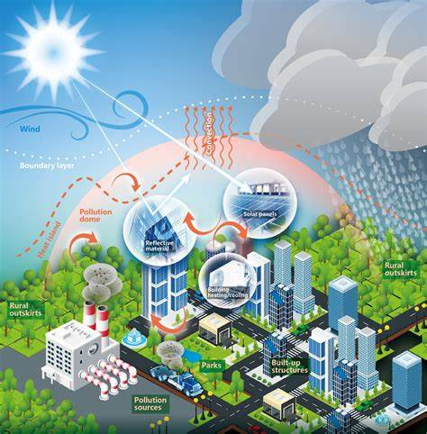

Association of Demographic and Occupational Factors with SARS‑CoV‑2 Vaccine Uptake in Kenya
Bertha A. Ocholla, Obed Nyangena, … Rebecca Kendagor
We examine … during emergencies and uncertainty.
Clicks: 0
Linking Weather Variability and Economic Growth in the East African Region: …
Obed Nyangena, Victor Kidake & Benson S. Igesa
We dissect inaccuracies … Environmental Kuznets Curve hypothesis.
Clicks: 0
Digital Fragility, Assorted Risks and Terrorism Confluence
Obed Nyangena & Mavia Imbali
This article provides a discursive relationship … risks soar.
Clicks: 0
Climate Change‑Urbanization Nexus: Exploring the Contribution …
Obed Nyangena, Victor Kidake & Benson S. Igesa

Using panel data … modernization in economic planning.
Clicks: 0
Linking Climate Change, Pollinators and Cereal Yields in Kenya
Obed Nyangena, Victor Kidake Senelwa, Rachel Ngesa
Our study links climate shifts … future studies.
Clicks: 0
The Impact of Weather Variability on Economic Growth in Kenya
Obed Nyangena
Employing a Vector Error Correction … policy measures.
Clicks: 0
Drought and Floods: The Triad of Climate Change Adaptation, Gender and Devolution in Kenya
Obed Nyangena, Nancy Wairimu

This chapter explores … published framework for resilience-building.
Clicks: 0